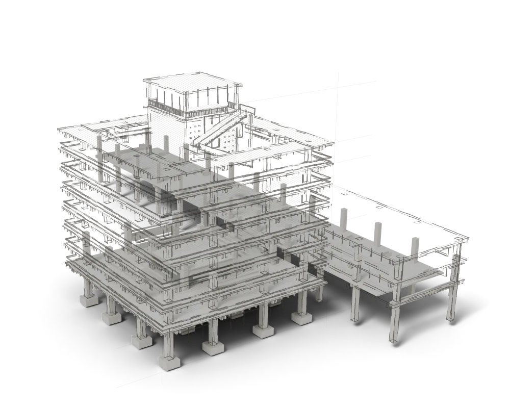

SKETCH → FRAME / КОНТРОЛЬ ДВИЖЕНИЯ
Скетч становится
конструкцией.
Прокручивайте в обе стороны. Рукописные линии уступают место объёму; камера остаётся неподвижной.
Подготавливаем кадры…

 V4 / SKETCH → FRAME / 24–39
V4 / SKETCH → FRAME / 24–39SKETCH → FRAME / КОНТРОЛЬ ДВИЖЕНИЯ
Прокручивайте в обе стороны. Рукописные линии уступают место объёму; камера остаётся неподвижной.
Подготавливаем кадры…
